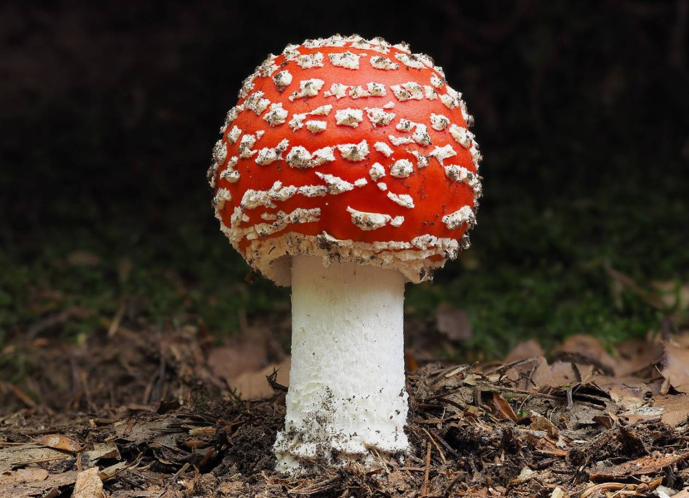
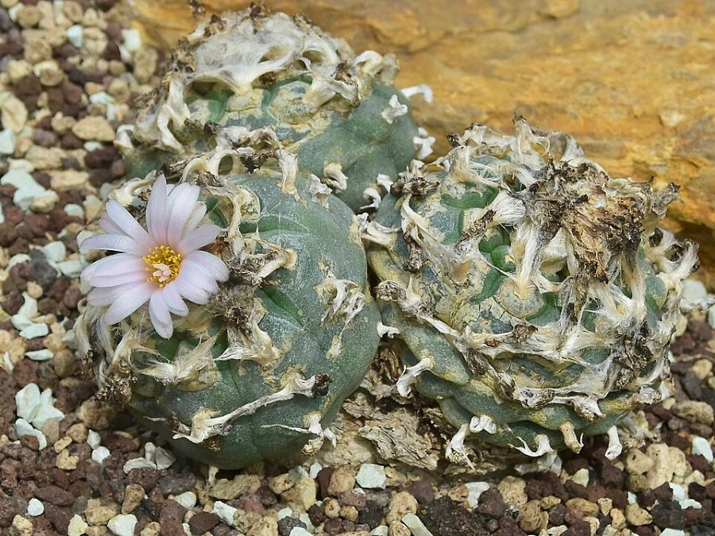
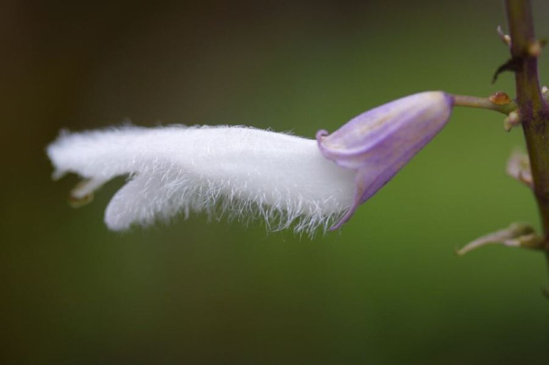
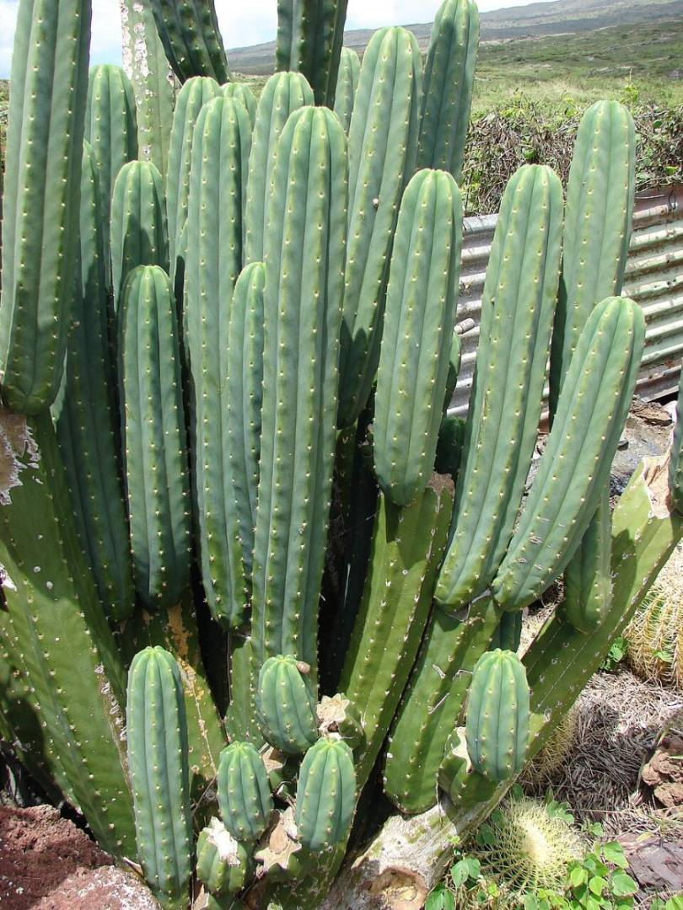
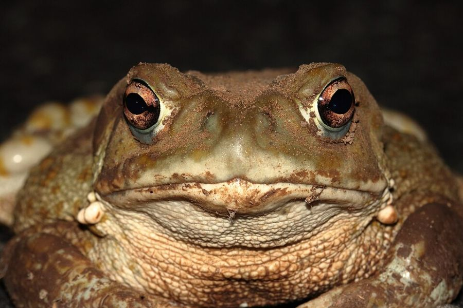
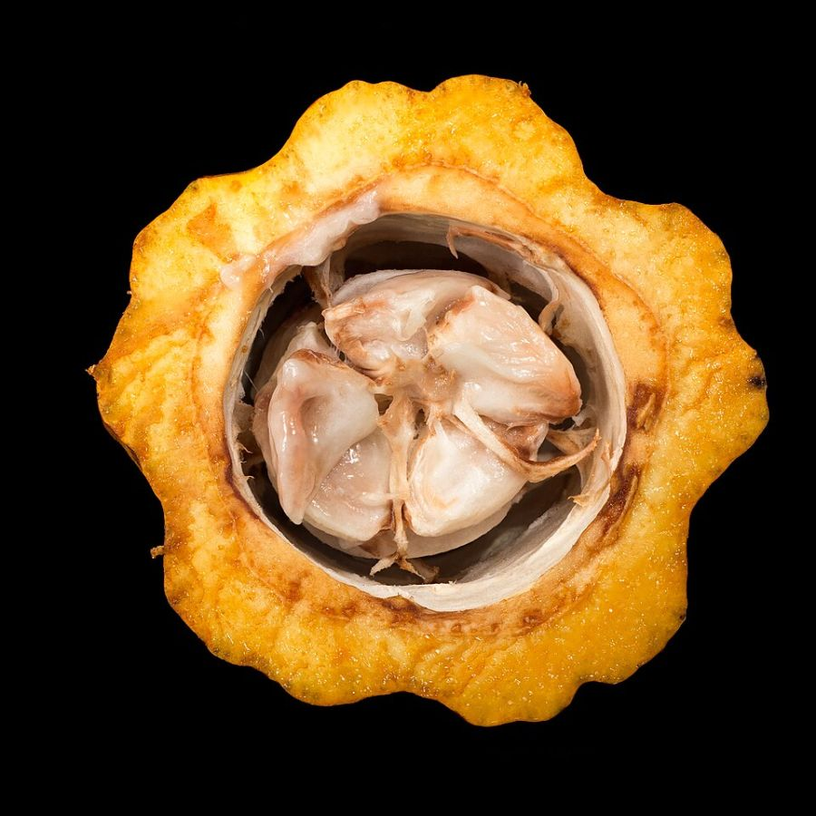
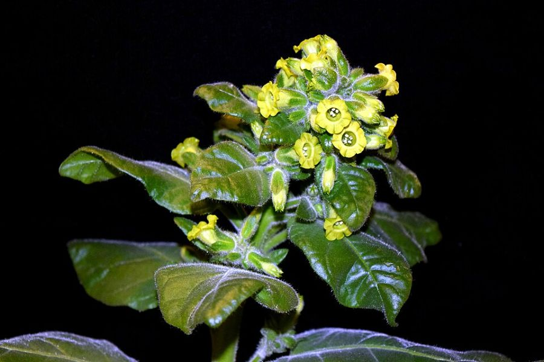
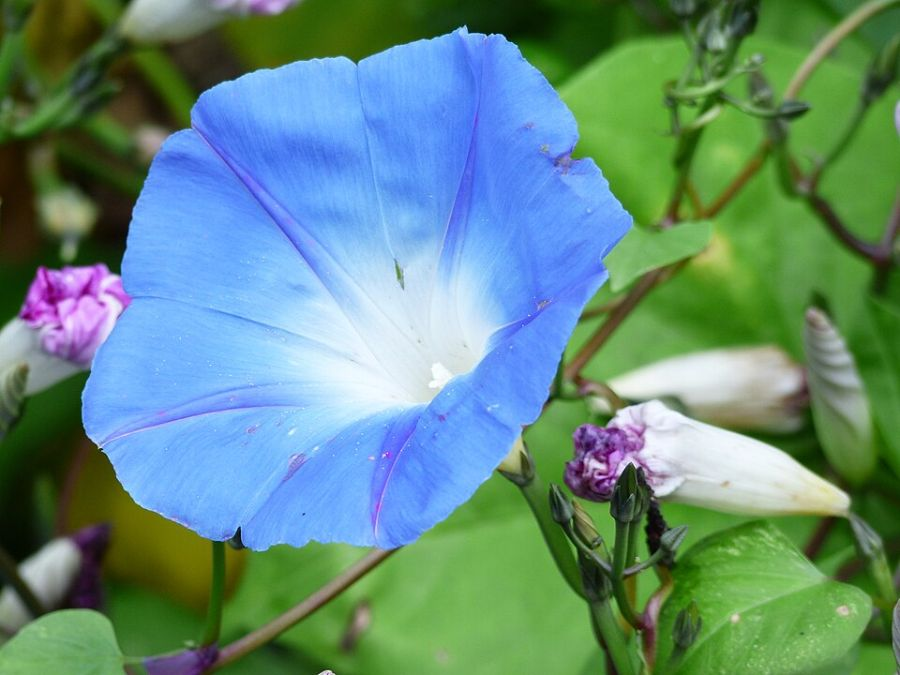
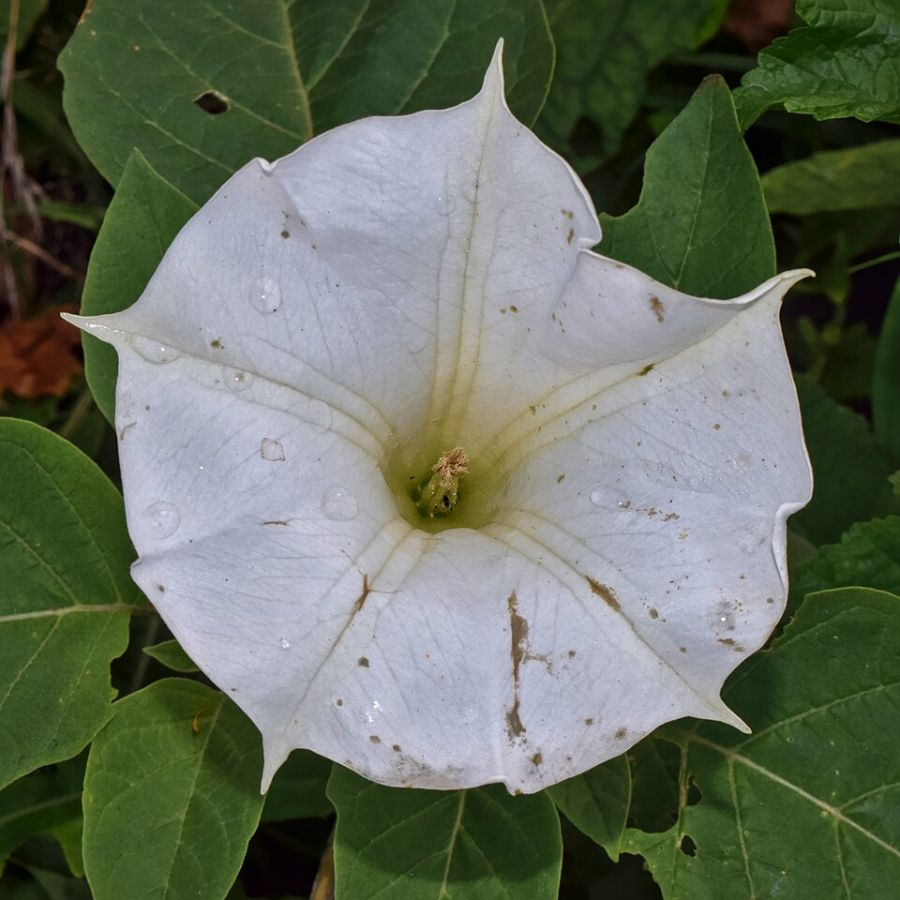
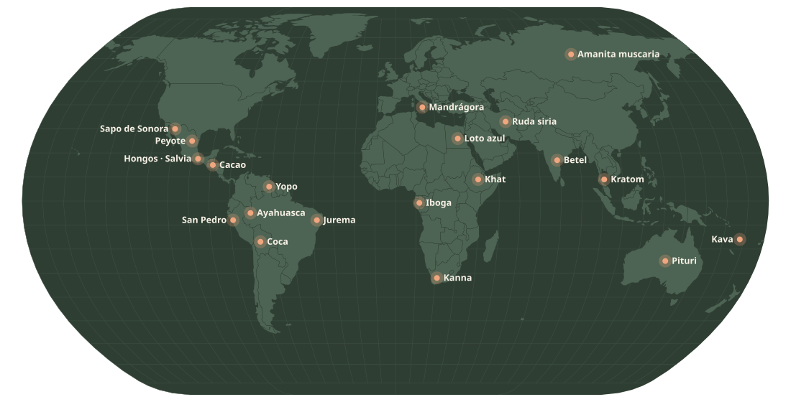

Medicinas · Enciclopedia
Enciclopedia de medicinas
Plantas, hongos, animales y preparados que distintos pueblos llaman medicina. Una ficha para cada uno: cómo es, dónde vive, quién guarda su memoria y qué se ha estudiado.
Lo más buscado AyahuascaPeyoteHongos psilocibiosSan PedroIboga


Entrar por
Seis reinos de medicinas
104 fichas previstas en la primera edición. También puedes buscar por nombre o recorrer el índice alfabético.
Las fichas
Mirar de cerca
 Preparado
PreparadoAyahuasca
Banisteriopsis caapi
La «soga de los espíritus»: una liana y la bebida que decenas de pueblos amazónicos cuecen con ella.
Matamoscas
Amanita muscaria
La seta roja de los cuentos. Tóxica, sedante y sin psilocibina.

CactusPeyote
Lophophora williamsii
El híkuri del pueblo wixárika, un cactus sin espinas del desierto.

PlantaHierba de la pastora
Salvia divinorum
La salvia de la Sierra Mazateca.

CactusSan Pedro
Echinopsis pachanoi
Wachuma, el cactus columnar de los Andes.
 Hongo
HongoMongui
Psilocybe semilanceata
El hongo psilocibio de los prados de Europa.
 Planta
PlantaIboga
Tabernanthe iboga
Arbusto de la selva de Gabón, centro del rito bwiti.

AnimalSapo de Sonora
Incilius alvarius
Un sapo del desierto cuya secreción contiene 5-MeO-DMT.

PlantaCacao
Theobroma cacao
Bebida ritual de Mesoamérica antes que alimento.

PlantaMapacho
Nicotiana rustica
El tabaco fuerte de la Amazonía, planta maestra de curanderos.

PlantaGloria de la mañana
Ipomoea tricolor
Sus semillas son el tlitliltzin de los mexicas.

PlantaToloache
Datura innoxia
Una datura de flores blancas, tan bella como tóxica.
Loto azul
Nymphaea caerulea
El nenúfar de los relieves del antiguo Egipto.
 Planta
PlantaMandrágora
Mandragora officinarum
La raíz con forma humana de los herbarios antiguos.
 Planta
PlantaChacruna
Psychotria viridis
La hoja que acompaña a la ayahuasca.
De dónde vienen
Cada una, de su territorio
Cada medicina pertenece a un lugar y a los pueblos que la cuidan. El mapa señala el origen de veinte de ellas.
- Amazonía y Orinoco
- Andes
- Mesoamérica y desiertos del norte
- África
- Europa y Mediterráneo
- Siberia y Asia central
- Sur y sudeste de Asia
- Oceanía

Índice alfabético
Todas, de la A a la Z
En negrita y con flecha, las fichas ya escritas. Las demás están en preparación.
Cómo se hace
Una ficha, muchas comprobaciones
- Cada ficha parte de una obra de referencia y se contrasta con fuentes actuales.
- Los nombres de las plantas siguen a Kew; los de los hongos, a Index Fungorum.
- Las referencias van junto al pasaje que apoyan.
- Cada fotografía lleva su autor y su licencia.
- Para la práctica y los riesgos, cada ficha enlaza con su guía.
- APDER no anima a consumir: informa.
 Psychedelics Encyclopedia
Psychedelics Encyclopedia Vine of the Soul
Vine of the Soul